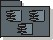

Guidelines:
Implementation Subsystem

Implementation Subsystem |
An
implementation subsystem is a collection of components and other
implementation subsystems that are used to structure the implementation
model by dividing it into smaller parts. |
Topics
Explanation 
A basic way of reducing complexity in an implementation model containing
hundreds of components, is to use implementation subsystems.
Subsystems take the form of directories, with additional structural or
management information. For example, a subsystem can be created as a directory
or a folder in a file system, or a subsystem in Rational Apex for C++ or Ada,
or packages using Java.
The implementation subsystem is the physical analogue of the design
package. The implementation model and the implementation
subsystems are the target of the implementation
view, and so are of primary importance at development time.
Exporting
Components
An implementation subsystem controls the external visibility of its contents.
A component can be referenced by components outside the subsystem, if it is made
visible ("exported") by its declaring subsystem.
All components (and contained subsystem) in a subsystem are visible outside a
subsystem by default. This means that any component outside this subsystem can
reference all components. For example, in C++ this means that components outside
can #include all components inside the subsystem.
Use
The implementation model can be more or less close to the design model,
depending on how you map the design packages to implementation subsystems in the
implementation model.
It is recommended to keep the mapping one to one, i.e. one design package
should be mapped to one implementation subsystem. The primary reason for that is
to have a seamless traceability from design to code.
There are situations where you need the subsystems in implementation to
differ from the packages in design. For more information, see the Activity:
Structure the Implementation Model.
You should decide how the design model relate to the implementation model;
this should be captured in the Design Guidelines specific to the project.
You can partition a system into subsystems for many reasons. The same
criteria as in design apply in implementation. For more information, see Guidelines:
Design Package.
Copyright
© 1987 - 2001 Rational Software Corporation
|  Artifacts >
Artifacts >
 Implementation Artifact Set >
Implementation Artifact Set >
 Implementation Model... >
Implementation Model... >
 Guidelines
Guidelines